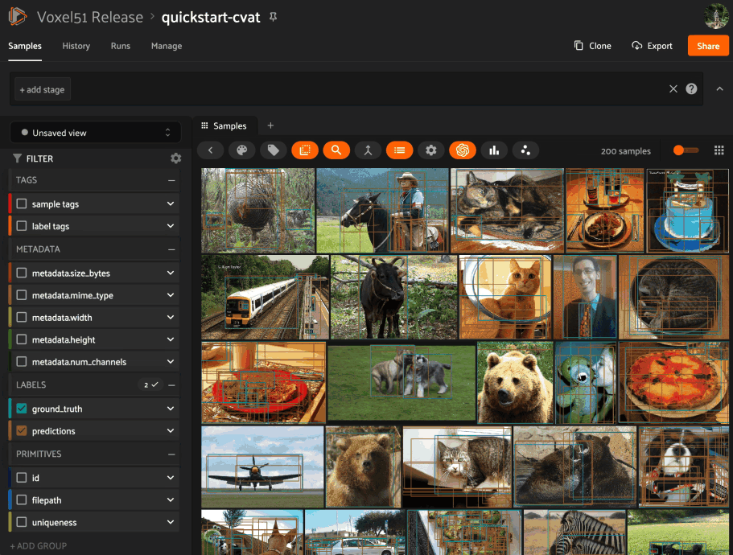

Using Plugins ¶¶
Every plugin that you download exposes one or more Panels and/or Operators that you can access from within the App.
Note
Check out theindex.md FiftyOne plugins repository for a growing collection of plugins that you can easily download and use locally.
Then, after you get comfortable using prebuilt plugins, try your hand at writing your own!
Downloading plugins ¶¶
To download and use a plugin, all you need is the plugin’s GitHub repository or a link to a ZIP archive of the plugin’s source code.
You can download plugins using any of the methods described below:
Note
A GitHub repository may contain multiple plugins. By default, all plugins that are found within the first three directory levels are installed, but you can select specific ones if desired as shown above.
Note
All plugins are downloaded to your plugins directory.
Note
You can download plugins from private GitHub repositories that you have
access to by providing your GitHub personal access token via the
GITHUB_TOKEN environment variable.
Your plugins directory ¶¶
All plugins must be stored and are automatically downloaded to your plugins directory in order for FiftyOne to find them.
By default, plugins are downloaded to ~/fiftyone/__plugins__, but you can
customize this directory by setting the FIFTYONE_PLUGINS_DIR environment
variable:
export FIFTYONE_PLUGINS_DIR=/path/to/your/plugins
You can also permanently configure this directory by adding it to your FiftyOne config.
{
"plugins_dir": "/path/to/your/plugins"
}
You can locate your current plugins directory by running the following command:
fiftyone config plugins_dir
# ~/fiftyone/__plugins__
Note
Your plugins directory must be readable by the FiftyOne server.
Managing plugins ¶¶
You can use the fiftyone plugins and fiftyone operators CLI methods to perform a variety of plugin-related actions.
Listing plugins ¶¶
You can use the fiftyone plugins list command to list the plugins that you’ve downloaded or created locally:
# List all locally available plugins
fiftyone plugins list
# List enabled plugins
fiftyone plugins list --enabled
# List disabled plugins
fiftyone plugins list --disabled
plugin version enabled directory
------------------- ------- ------- ----------------------------------------------------------
@voxel51/annotation 1.0.0 ✓ ~/fiftyone/__plugins__/fiftyone-plugins/plugins/annotation
@voxel51/brain 1.0.0 ✓ ~/fiftyone/__plugins__/fiftyone-plugins/plugins/brain
@voxel51/evaluation 1.0.0 ✓ ~/fiftyone/__plugins__/fiftyone-plugins/plugins/evaluation
@voxel51/indexes 1.0.0 ✓ ~/fiftyone/__plugins__/fiftyone-plugins/plugins/indexes
@voxel51/io 1.0.0 ✓ ~/fiftyone/__plugins__/fiftyone-plugins/plugins/io
@voxel51/utils 1.0.0 ✓ ~/fiftyone/__plugins__/fiftyone-plugins/plugins/utils
@voxel51/voxelgpt 1.0.0 ✓ ~/fiftyone/__plugins__/voxelgpt
@voxel51/zoo 1.0.0 ✓ ~/fiftyone/__plugins__/fiftyone-plugins/plugins/zoo
Listing operators ¶¶
You can use the fiftyone operators list command to list the individual operators and panels within the plugins that you’ve installed locally:
# List all available operators and panels
fiftyone operators list
# List enabled operators and panels
fiftyone operators list --enabled
# List disabled operators and panels
fiftyone operators list --disabled
# Only list panels
fiftyone operators list --panels-only
uri enabled builtin panel unlisted
------------------------------------------- -------- -------- ------ ---------
@voxel51/annotation/request_annotations ✓
@voxel51/annotation/load_annotations ✓
@voxel51/annotation/get_annotation_info ✓
@voxel51/annotation/load_annotation_view ✓
@voxel51/annotation/rename_annotation_run ✓
@voxel51/annotation/delete_annotation_run ✓
@voxel51/brain/compute_visualization ✓
@voxel51/brain/compute_similarity ✓
@voxel51/brain/compute_uniqueness ✓
@voxel51/brain/compute_mistakenness ✓
@voxel51/brain/compute_hardness ✓
@voxel51/brain/get_brain_info ✓
@voxel51/brain/load_brain_view ✓
@voxel51/brain/rename_brain_run ✓
@voxel51/brain/delete_brain_run ✓
@voxel51/evaluation/evaluate_model ✓
@voxel51/evaluation/get_evaluation_info ✓
@voxel51/evaluation/load_evaluation_view ✓
@voxel51/evaluation/rename_evaluation ✓
@voxel51/evaluation/delete_evaluation ✓
@voxel51/io/import_samples ✓
@voxel51/io/merge_samples ✓
@voxel51/io/merge_labels ✓
@voxel51/io/export_samples ✓
@voxel51/io/draw_labels ✓
@voxel51/operators/clone_selected_samples ✓ ✓
@voxel51/operators/clone_sample_field ✓ ✓
@voxel51/operators/rename_sample_field ✓ ✓
@voxel51/operators/delete_selected_samples ✓ ✓
@voxel51/operators/delete_sample_field ✓ ✓
@voxel51/operators/print_stdout ✓ ✓ ✓
@voxel51/operators/list_files ✓ ✓ ✓
@voxel51/utils/create_dataset ✓
@voxel51/utils/load_dataset ✓
@voxel51/utils/edit_dataset_info ✓
@voxel51/utils/rename_dataset ✓
@voxel51/utils/delete_dataset ✓
@voxel51/utils/compute_metadata ✓
@voxel51/utils/generate_thumbnails ✓
@voxel51/utils/manage_plugins ✓
@voxel51/zoo/load_zoo_dataset ✓
@voxel51/zoo/apply_zoo_model ✓
Downloading plugins ¶¶
You can use the fiftyone plugins download command to list the plugins that you’ve downloaded or created locally:
# Download plugins from a GitHub repository URL
fiftyone plugins download <github-repo-url>
# Download plugins by specifying the GitHub repository details
fiftyone plugins download <user>/<repo>[/<ref>]
# Download specific plugins from a URL with a custom search depth
fiftyone plugins download \
<url> \
--plugin-names <name1> <name2> <name3> \
--max-depth 2 # search nested directories for plugins
Getting plugin info ¶¶
You can use the fiftyone plugins info command to view the available metadata about a plugin:
fiftyone plugins info @voxel51/annotation
key value
---------------------- --------------------------------------------------------------------
name @voxel51/annotation
author
version 1.0.0
url https://github.com/voxel51/fiftyone-plugins/.../annotation/README.md
license Apache 2.0
description Utilities for integrating FiftyOne with annotation tools
fiftyone_compatibility >=0.22
operators request_annotations
load_annotations
get_annotation_info
load_annotation_view
rename_annotation_run
delete_annotation_run
js_bundle dist/index.umd.js
py_entry __init__.py
js_bundle_exists False
js_bundle_server_path
has_py True
has_js False
server_path /plugins/fiftyone-plugins/plugins/annotation
secrets FIFTYONE_CVAT_URL
FIFTYONE_CVAT_USERNAME
FIFTYONE_CVAT_PASSWORD
FIFTYONE_CVAT_EMAIL
FIFTYONE_LABELBOX_URL
FIFTYONE_LABELBOX_API_KEY
FIFTYONE_LABELSTUDIO_URL
FIFTYONE_LABELSTUDIO_API_KEY
directory ~/fiftyone/__plugins__/fiftyone-plugins/plugins/annotation
Getting operator info ¶¶
You can use the fiftyone operators info to view the available metadata about an individual operator or panel within a plugin:
fiftyone operators info @voxel51/io/import_samples
key value
----------------------------------- ----------------------
name import_samples
label Import samples
description
execute_as_generator True
unlisted False
dynamic True
on_startup False
on_dataset_open False
disable_schema_validation False
delegation_target
icon
dark_icon /assets/icon-dark.svg
light_icon /assets/icon-light.svg
allow_immediate_execution True
allow_delegated_execution False
default_choice_to_delegated False
resolve_execution_options_on_change True
Installing plugin requirements ¶¶
You can use the fiftyone plugins requirements command to view, install, and ensure installation of a plugin’s requirements:
# Print requirements for a plugin
fiftyone plugins requirements <name> --print
# Install any requirements for the plugin
fiftyone plugins requirements <name> --install
# Ensures that the requirements for the plugin are satisfied
fiftyone plugins requirements <name> --ensure
Enabling and disabling plugins ¶¶
You can use the fiftyone plugins enable and fiftyone plugins disable commands to enable and disable plugins that you’ve downloaded:
# Enable a plugin
fiftyone plugins enable <name>
# Enable multiple plugins
fiftyone plugins enable <name1> <name2> ...
# Enable all plugins
fiftyone plugins enable --all
# Disable a plugin
fiftyone plugins disable <name>
# Disable multiple plugins
fiftyone plugins disable <name1> <name2> ...
# Disable all plugins
fiftyone plugins disable --all
Note
Operators associated with disabled plugins will not appear in the App’s operator browser.
Plugin disablement is stored as an enabled: false entry in the plugin’s
config settings.
fiftyone plugins disable @voxel51/zoo
fiftyone app config plugins
{
"map": {
"mapboxAccessToken": "XXXXXXXX"
},
"@voxel51/zoo": {
"enabled": false
},
...
}
Deleting plugins ¶¶
You can use the fiftyone plugins delete command to delete plugins from your local machine.
# Delete a plugin from local disk
fiftyone plugins delete <name>
# Delete multiple plugins from local disk
fiftyone plugins delete <name1> <name2> ...
# Delete all plugins from local disk
fiftyone plugins delete --all
Configuring plugins ¶¶
Certain plugins support configuration. For those plugins, you can store:
-
System-wide plugin settings under the
pluginskey of your App config -
Dataset-specific plugin settings for any subset of the above values on a dataset’s App config.
See the configuring plugins page for more information.
Plugin secrets ¶¶
Some plugins may require sensitive information such as API tokens and login
credentials in order to function. Any secrets that a plugin requires are
documented under the secrets key of its fiftyone.yml file.
For example, the @voxel51/annotation plugin declares the following secrets:
secrets:
- FIFTYONE_CVAT_URL
- FIFTYONE_CVAT_USERNAME
- FIFTYONE_CVAT_PASSWORD
- FIFTYONE_CVAT_EMAIL
- FIFTYONE_LABELBOX_URL
- FIFTYONE_LABELBOX_API_KEY
- FIFTYONE_LABELSTUDIO_URL
- FIFTYONE_LABELSTUDIO_API_KEY
Note
You can use the fiftyone plugins info CLI command to print information about a plugin, including its required secrets.
As the naming convention implies, any necessary secrets are provided by setting environment variables with the appropriate names. For example, if you want to use the CVAT backend with the @voxel51/annotation plugin, you would set:
FIFTYONE_CVAT_URL=...
FIFTYONE_CVAT_USERNAME=...
FIFTYONE_CVAT_PASSWORD=...
FIFTYONE_CVAT_EMAIL=...
At runtime, the plugin’s execution context will automatically be hydrated with
any available secrets that are declared by the plugin. Operators access these
secrets via the ctx.secrets dict:
def execute(self, ctx):
url = ctx.secrets["FIFTYONE_CVAT_URL"]
username = ctx.secrets["FIFTYONE_CVAT_USERNAME"]
password = ctx.secrets["FIFTYONE_CVAT_PASSWORD"]
email = ctx.secrets["FIFTYONE_CVAT_EMAIL"]
Using panels ¶¶
Panels are miniature full-featured data applications that you can open in App Spaces and interactively manipulate to explore your dataset and update/respond to updates from other spaces that are currently open in the App.
FiftyOne natively includes the following Panels:
-
Samples panel: the media grid that loads by default when you launch the App
-
Histograms panel: a dashboard of histograms for the fields of your dataset
-
Embeddings panel: a canvas for working with embeddings visualizations
-
Map panel: visualizes the geolocation data of datasets that have a
GeoLocationfield
Any plugins that you’ve installed may expose additional panels too.
Click the + icon next to the “Samples” tab to open a new panel:

Note
Did you know? You can also programmatically configure spaces in Python.
Using operators ¶¶
Operators are a powerful feature in FiftyOne that allow plugin developers to define custom operations that can be executed from within the App.
Some operators may expose themselves as custom buttons, icons, or menu items throughout the App. However, the Operator Browser allows users to search through all available (enabled) operators.
You can open the Operator Browser by clicking on the Operator Browser icon
above the sample grid or by typing backtick ( `):

Operators provide dynamic input forms that collect the necessary user inputs.
The actual operation is then performed by pressing the Execute/ Schedule
button at the bottom of the form.
Some Operators perform an immediate action when executed, while other Operators delegate their execution to another process.
Executing operators via SDK ¶¶
Many operators are intended to be executed programmatically via the SDK rather than (or in addition to) executing them by filling out their input form in the App.
Calling operators ¶¶
By convention, operators that are intended to be executed programmatically
should implement __call__() so that users have a well-documented interface
for invoking the operator as a function.
For example, the @voxel51/utils/compute_metadata operator can be invoked like so:
import fiftyone as fo
import fiftyone.operators as foo
import fiftyone.zoo as foz
dataset = foz.load_zoo_dataset("quickstart")
compute_metadata = foo.get_operator("@voxel51/utils/compute_metadata")
# (Re)compute the dataset's metadata
compute_metadata(dataset, overwrite=True)
Note
Notice that get_operator() is
used to retrieve the operator by its URI.
Behind the scenes, the operator’s __call__() method is implemented as
follows:
class ComputeMetadata(foo.Operator):
def __call__(
self,
sample_collection,
overwrite=False,
num_workers=None,
):
ctx = dict(view=sample_collection.view())
params = dict(
overwrite=overwrite,
num_workers=num_workers,
)
return foo.execute_operator(self.uri, ctx, params=params)
which simply packages up the provided keyword arguments into the correct format
for the operator’s ctx.params and then passes them to
execute_operator(), which
performs the execution.
For operators whose
execute() method returns
data, you can access it via the result property of the returned
ExecutionResult object:
op = foo.get_operator("@an-operator/with-results")
result = op(...)
print(result.result) # {...}
Note
When working in notebook contexts, executing operators returns an
asyncio.Task that you can await to retrieve the
ExecutionResult:
op = foo.get_operator("@an-operator/with-results")
result = await op(...)
print(result.result) # {...}
Requesting delegation ¶¶
Operators that support delegated execution can
support this via the __call__() syntax by passing the
request_delegation=True flag to
execute_operator().
In fact, the @voxel51/utils/compute_metadata operator does just that:
class ComputeMetadata(foo.Operator):
return foo.OperatorConfig(
...
allow_immediate_execution=True,
allow_delegated_execution=True,
)
def __call__(
self,
sample_collection,
overwrite=False,
num_workers=None,
delegate=False,
):
ctx = dict(view=sample_collection.view())
params = dict(
overwrite=overwrite,
num_workers=num_workers,
)
return foo.execute_operator(
self.uri,
ctx,
params=params,
request_delegation=delegate,
)
which means that it can be invoked like so:
compute_metadata = foo.get_operator("@voxel51/utils/compute_metadata")
# Schedule a delegated operation to (re)compute metadata
compute_metadata(dataset, overwrite=True, delegate=True)
Direct execution ¶¶
You can programmatically execute any operator by directly calling
execute_operator():
import fiftyone as fo
import fiftyone.operators as foo
import fiftyone.zoo as foz
dataset = foz.load_zoo_dataset("quickstart")
ctx = {
"view": dataset.take(10),
"params": dict(
export_type="LABELS_ONLY",
dataset_type="COCO",
labels_path=dict(absolute_path="/tmp/coco/labels.json"),
label_field="ground_truth",
)
}
foo.execute_operator("@voxel51/io/export_samples", ctx)
Note
In general, to use
execute_operator() you must
inspect the operator’s
execute()
implementation to understand what parameters are required.
For operators whose
execute() method returns
data, you can access it via the result property of the returned
ExecutionResult object:
result = foo.execute_operator("@an-operator/with-results", ctx)
print(result.result) # {...}
Note
When working in notebook contexts, executing operators returns an
asyncio.Task that you can await to retrieve the
ExecutionResult:
result = await foo.execute_operator("@an-operator/with-results", ctx)
print(result.result) # {...}
Requesting delegation ¶¶
If an operation supports both immediate and
delegated execution as specified by its
execution options, you can request
delegated execution by passing the request_delegation=True flag to
execute_operator():
foo.execute_operator(operator_uri, ctx=ctx, request_delegation=True)
This has the same effect as choosing Schedule from the dropdown in the
operator’s input modal when executing it from within the App:

Note
FiftyOne Teams users can also specify an optional delegation target for their delegated operations:
foo.execute_operator(
operator_uri,
ctx=ctx,
request_delegation=True,
delegation_target="overnight",
)
Delegating function calls ¶¶
The @voxel51/utils/delegate operator provides a general purpose utility for delegating execution of an arbitrary function call that can be expressed in any of the following forms:
-
Execute an arbitrary function:
fcn(*args, **kwargs) -
Apply a function to a dataset or view:
fcn(dataset_or_view, *args, **kwargs) -
Call an instance method of a dataset or view:
dataset_or_view.fcn(*args, **kwargs)
Here’s some examples of delegating common tasks that can be expressed in the above forms:
import fiftyone as fo
import fiftyone.operators as foo
import fiftyone.zoo as foz
dataset = foz.load_zoo_dataset("quickstart")
delegate = foo.get_operator("@voxel51/utils/delegate")
# Compute metadata
delegate("compute_metadata", dataset=dataset)
# Compute visualization
delegate(
"fiftyone.brain.compute_visualization",
dataset=dataset,
brain_key="img_viz",
)
# Export a view
delegate(
"export",
view=dataset.to_patches("ground_truth"),
export_dir="/tmp/patches",
dataset_type="fiftyone.types.ImageClassificationDirectoryTree",
label_field="ground_truth",
)
# Load the exported patches into a new dataset
delegate(
"fiftyone.Dataset.from_dir",
dataset_dir="/tmp/patches",
dataset_type="fiftyone.types.ImageClassificationDirectoryTree",
label_field="ground_truth",
name="patches",
persistent=True,
)
Delegated operations ¶¶
Delegated operations are a powerful feature of FiftyOne’s plugin framework that allows you to schedule potentially long-running tasks from within the App that are executed in the background while you continue to work.
Note
FiftyOne Teams deployments come out of the box with a connected compute cluster for executing delegated operations at scale.
In FiftyOne Open Source, you can use delegated operations at small scale by running them locally.
For example, have model predictions on your dataset that you want to evaluate? The @voxel51/evaluation plugin makes it easy:

Need to compute embedding for your dataset so you can visualize them in the Embeddings panel? Kick off the task with the @voxel51/brain plugin and proceed with other work while the execution happens in the background:

Why is this awesome? Your AI stack needs a flexible data-centric component that enables you to organize and compute on your data. With delegated operations, FiftyOne becomes both a dataset management/visualization tool and a workflow automation tool that defines how your data-centric workflows like ingestion, curation, and evaluation are performed.
Note
Want to run delegated operations at scale? Contact us about FiftyOne Teams, an open source-compatible enterprise deployment of FiftyOne with multiuser collaboration features, native cloud dataset support, and much more!
Think of FiftyOne Teams as the single source of truth on which you co-develop your data and models together 📈
Setting up an orchestrator ¶¶
FiftyOne Open Source ¶¶
FiftyOne Open Source users can run delegated operations via the fiftyone delegated launch CLI command:
fiftyone delegated launch
This command starts a service that will continuously check for any queued delegated operations and execute them serially in its process.
You must also ensure that the allow_legacy_orchestrators config flag is set in the environment where you run the App/SDK, e.g. by setting:
export FIFTYONE_ALLOW_LEGACY_ORCHESTRATORS=true
FiftyOne Teams ¶¶
FiftyOne Teams deployments come out of the box with a connected compute cluster for executing delegated operations at scale.
This powerful feature allows users to install/build plugins that execute potentially long-running tasks in the background while users continue with other work in the App.
Note
Want to take advantage of this functionality? Contact us about FiftyOne Teams, an open source-compatible enterprise deployment of FiftyOne with multiuser collaboration features, native cloud dataset support, and much more!
Think of FiftyOne Teams as the single source of truth on which you co-develop your data and models together 📈
Managing delegated operations ¶¶
The fiftyone delegated CLI command contains a number of useful utilities for viewing the status of your delegated operations.
Listing delegated operations ¶¶
You can use the fiftyone delegated list command to list the delegated operations that you’ve run:
# List all delegated operations
fiftyone delegated list
# List some specific delegated operations
fiftyone delegated list \
--dataset quickstart \
--operator @voxel51/io/export_samples \
--state COMPLETED \
--sort-by COMPLETED_AT \
--limit 10
Getting delegated operation info ¶¶
You can use the fiftyone delegated info command to view the available metadata about a delegated operation, including its inputs, execution status, and error stack trace, if applicable.
# Print information about a delegated operation
fiftyone delegated info <id>
Cleaning up delegated operations ¶¶
You can use the fiftyone delegated cleanup command to cleanup delegated operations:
# Delete all failed operations associated with a given dataset
fiftyone delegated cleanup --dataset quickstart --state FAILED
# Delete all delegated operations associated with non-existent datasets
fiftyone delegated cleanup --orphan
# Print information about operations rather than actually deleting them
fiftyone delegated cleanup --orphan --dry-run